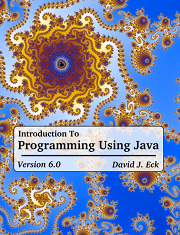

Introduction to Programming Using Java, Sixth Edition
Version 6.0, June 2011
(Version 6.0.2, with minor corrections, May 2013)
|

|
WELCOME TO
the Sixth Edition of Introduction to Programming Using Java,
a free, on-line textbook on introductory
programming, which uses Java as the language of instruction. This book is directed
mainly towards beginning programmers, although it might also be useful for experienced
programmers who want to learn something about Java. It is certainly not meant to
provide complete coverage of the Java language.
The sixth edition requires Java 5.0 and can also be used with later versions of java.
Almost all the examples in the book will work with Java 5.0, but some features from later
versions of Java are also covered. You will find many Java applets
on the web pages that make up this book, and most of those applets require
Java 5.0 or higher to function. Earlier editions of the book are still available;
see the preface for links.
You can download Introduction to Programming Using Java for use on your
own computer. A PDF version is also available.
Links can be found at the bottom of this page.
Short Table of Contents:
©1996--2013, David J. Eck.
This work is licensed under a Creative Commons Attribution-Noncommercial-ShareAlike 3.0 License.
(This license allows you to redistribute this book in unmodified form for non-commercial purposes. It allows you
to make and distribute modified versions for non-commercial purposes, as long as you include an attribution to the
original author, clearly describe the modifications that you have made, and distribute
the modified work under the same license as the original. Permission might be given by the
author for other uses. See the
license for full
details.)
The most recent version of this book is always available, at no
charge, for downloading and for on-line use at the Web address:
http://math.hws.edu/javanotes/
Downloading And Other Links
-
http://math.hws.edu/eck/cs124/downloads/javanotes6.zip --
This "zip" archive contains a complete copy of the web site. It should be usable on almost
any computer.
(Size: 4.4 Megabytes.)
-
http://math.hws.edu/eck/cs124/downloads/javanotes6.tar.bz2 --
This "bzip2 tar" archive contains a complete copy of the web site in a format that allows greater compression
but that might not be usable on all computers. On most UNIX systems, including Linux and Mac OS, you
should be able to extract it using the command "bunzip2 javanotes6.tar.bz2" followed by
"tar xf javanotes6.tar" on the command line (if it is not extracted automatically when you download it).
(Size: 3.2 Megabytes.)
-
http://math.hws.edu/eck/cs124/downloads/javanotes6-linked.pdf --
a PDF version with internal links for navigation and external links to source code
files, exercise solutions, and other resources that are not included in the PDF.
(Size: 6 Megabytes; 751 pages.)
-
http://math.hws.edu/eck/cs124/downloads/javanotes6.pdf --
a PDF version without links, more suitable for printing.
(Size: 5.5 Megabytes; 758 pages.)
-
Printed versions -- I have made this book available for
purchase in printed versions from the print-on-demand publisher
lulu.com. This is for convenience only, for those who would
like to have a bound printout in a nice form.
(Please do not feel obliged to buy the printed version; I do not make any money from it!)
The entire book is available in a rather thick printed version at
http://www.lulu.com/content/612392.
It is also available in two parts as http://www.lulu.com/content/559884
and http://www.lulu.com/content/822314.
-
Complete Sources -- The complete source files that are used to produce both the web site
and PDF versions of this book are available for download, but will be useful only to a very limited
audience. See the end of the preface for more information and a link.
|
(1 June 2011, Version 6.0 released)
(25 July 2012, Version 6.0.1 released)
(17 May 2013, Version 6.0.2 released)